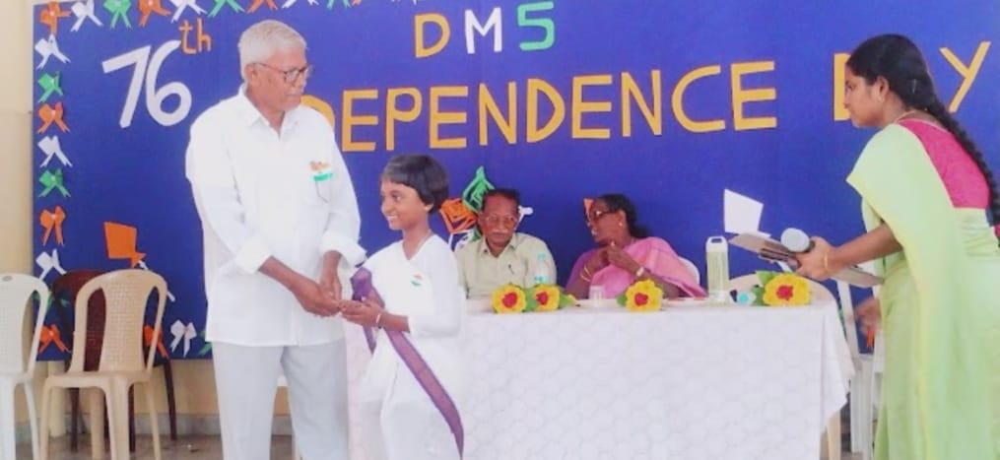
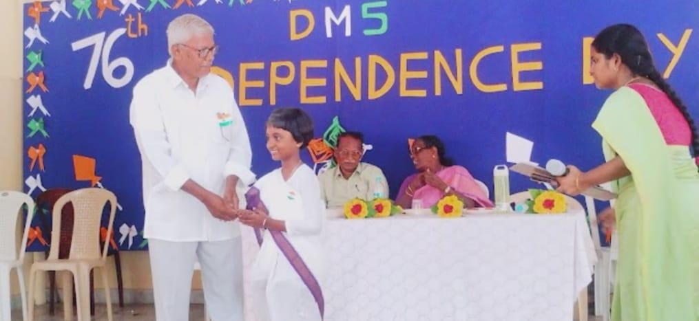

There are many events and celebrations that are being conducted every academic year in Daniel Memorial E.M.High school. Conducting events and celebrating festivals i.e any other special days makes students of the school to participate in different activities like organising the event,participating in competitions,moreover it makes children enthusiastic and happy. The speeches which are delivered by teachers not only inspires students but also gives them a lot of knowledge. The following are some of the images of events and celebrations that were held in the past academic years.
On every year Independence day,many events are held. Activities like flag hoisting, remembering our great national leaders, chocolates distribution to students, prize distribution to students,conducting games, teachers delivering inspiring speeches etc.
These are the images of the celebrations held on Independence day.
 

On every year gradution day,dance performances are given by students of the school. many prizes are distributed to students on their excellence in academics and sports too. Gifts are given to teachers for their hardwork. This event is celebrated like a festival in the school.
The following are the photos of annual day event.
Along with graduation day,farewell event is also conducted every year where a warm send-off is given to 10th class students. Speeches are given by teachers about the path to be chosen in life to students. Students too share their experiences and students host the event in a great way.
These are the images of farewell event that took place in previous yeara.
Very useful activities like planting trees, awareness programs about health by holding placards by students is done here. These activities teaches students many values of life.
The following are the images of these activities.
Every year fancy dress competition also conducted. This increases students creativity and knowledge in them about different varieties of dressing.
The following are the images of fsncy dress competition.